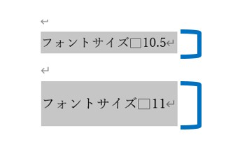
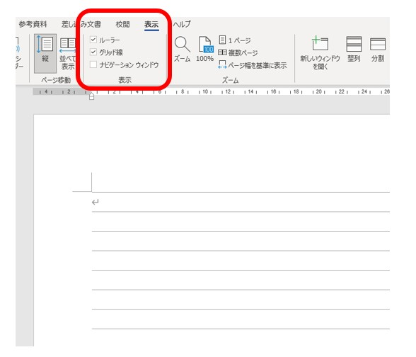
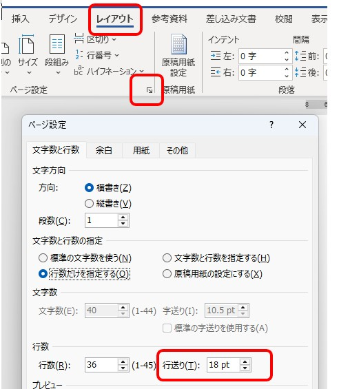
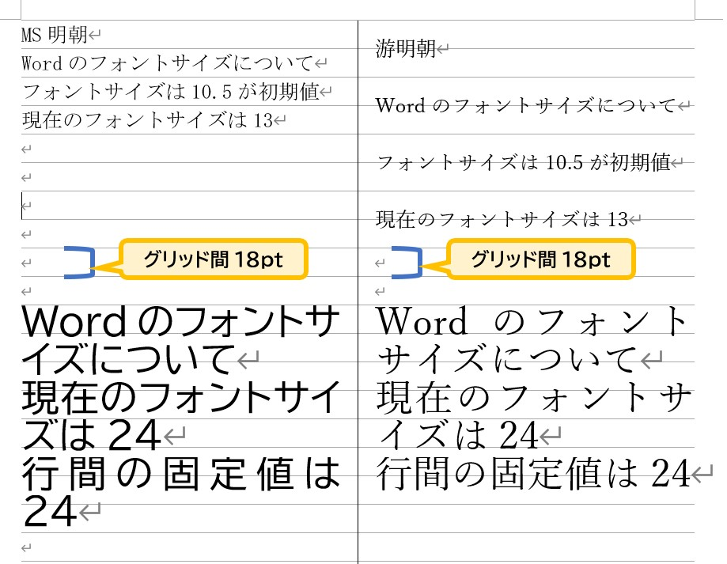

Wordの行間が広がる理由と修正方法
11ptで急に広くなる原因を解説
※この記事は、Microsoft 365など最近のWordの画面をもとに説明しています。バージョンによって、メニューの名前や位置が少し違う場合があります。
11ptにしたら、なぜ行間が広がる？
Wordで文章を打っていて、文字のサイズを標準の「10.5pt」から、ほんの少しだけ大きい「11pt」に変えた瞬間、行の間がドカンと空いて、スカスカになってしまった経験はありませんか？
文字はほんのわずかに大きくなっただけなのに、見た目の印象がこれほど極端に変わってしまうのは不思議ですよね。

▲ 文字を選択したときの背景色（グレーの範囲）が11ptで急激に広がります
「操作を間違えたのかな？」と不安になる必要はありません。実はこれ、Wordが裏側で守っている「あるルール」が原因なのです。
実はWordには「18pt」の行グリッドがある
Wordの画面は一見すると白紙ですが、実は裏側にノートの罫線のような「行グリッド線」という透明なレールが敷かれています。初期設定では、文字はこのレールの上に磁石のように吸い付いて並ぶ仕組みになっています。

▲ [表示]タブで「グリッド線」にチェックを入れると、隠れたレールが姿を現します
そして、このレールの幅（間隔）は、標準設定では「18pt」に決まっています。この数字こそが、スカスカ現象を引き起こす正体です。

▲ [ページ設定] の奥深くを確認すると、この「18pt」という数字が書かれています
Wordは「文字本体」の周りに、読みやすさを保つための「上下の余白（クッション）」をセットにして配置しようとします。10.5ptの文字ならこのクッションを含めても18ptのレール内に収まりますが、11ptになると合計が18ptをほんの少し超えてしまいます。
すると、Wordは「1行分には収まりきらない」と判断し、2行分（36pt）の広大なスペースを確保してしまうのです。これが、急に行間が広がる仕組みです。
フォントによって違いが出る理由
同じ「11pt」に設定しても、使っているフォントの種類によって「行間が広がるタイミング」が違う点にも注目してみましょう。これは、フォントごとに「余白（クッション）」の厚みの設計が異なるためです。

▲ フォントのデザインによって、レールからはみ出すタイミングが変わります
-
游明朝（今の標準フォント）
読みやすさを重視して上下の余白がたっぷり取られています。そのため、11ptにした時点ですぐに18ptのレールからはみ出し、スカスカになります。
-
MS明朝（以前の標準フォント）
余白が非常にコンパクトに設計されています。そのため、13ptまで文字を大きくしても18ptのレールの中に踏みとどまることができ、行間が広がりにくい特性があります。
直す前に、行間の設定の種類を知っておこう
Wordの行間は、[ホーム]タブの「行と段落の間隔」や、[段落]の設定画面で選びます。主な種類は次のとおりです。
| 種類 | 意味 | 向いている場面 |
|---|---|---|
| 1行 | 文字の大きさに合わせた標準の高さ | 迷ったらここに戻す |
| 1.5行・2行・倍数 | 標準の高さの○倍にする | 少しだけ広く、または狭くしたいとき |
| 最小値 | 指定した数値以上の高さ。文字が大きければ自動で広がる | 文字の大きさが混ざっている文書 |
| 固定値 | 文字の大きさに関係なく、常に指定した高さ | 高さを厳密にそろえたいとき |
行間がおかしいと感じたら、直す前に、今の行間が何に設定されているかを確認してください。他の人から受け取った文書や、以前に自分で設定した文書では、「固定値」や「最小値」になっていることがあります。設定が分からなくなったら、一度「1行」に戻してから整え直すほうが、遠回りに見えて早く解決します。
行間を狭くする・整える方法
文章を書き終えたあと、この意図しない隙間を解消して、思い通りの見た目に整えるには、以下の2つの設定を使い分けましょう。
[段落]の設定画面にある「1ページの行数を指定時に文字を行グリッド線に合わせる」のチェックを外します。磁石のようなルールをなくすことで、文字の大きさに合わせた自然な高さで並ぶようになります。
行間の設定を「固定値」に変更し、数値を指定します。画像のように、レールの影響を一切受けずに、どのフォントでも均一な間隔で整えることができます。
「固定値」を使うときは、フォントサイズと同じか、それより数ポイント大きい数字（18pt〜24ptなど）を目安に入れると、読みやすく落ち着いた仕上がりになります。1枚の紙に情報を収めたいときの最終手段として覚えておくと便利ですよ。
「固定値」を使うときの3つの注意
固定値は、どのフォントでも同じ高さにそろえられる便利な設定です。ただし、使い方を間違えると別の問題が起きます。
① 文字サイズより小さくしない
10.5ptの文字に、固定値で10ptを指定したような場合、文字の上の部分が切れて表示されたり、印刷で欠けたりします。固定値は、文字サイズと同じか、それより大きい数値にしましょう。
② 文字と同じ行にある画像が見切れる
画像を文字と同じ行に置いている場合、固定値にすると画像の一部しか表示されないことがあります。画像のある段落だけは「1行」に戻してください。
③ あとから文字サイズを変えると崩れる
固定値は文字の大きさを無視して高さを決めます。そのため、あとで文字サイズを変えると、行間が詰まりすぎたり、空きすぎたりします。文字サイズを変えたら、行間も見直す習慣をつけましょう。
履歴書や職務経歴書を1ページに収めたくて、行間をどんどん詰めてしまう方がいます。しかし、詰めすぎた書類は読みにくく、読む人に疲れた印象を与えます。固定値で詰める前に、まず文章の量、余白、文字サイズを見直してください。それでも収まらないときの最終手段として使うのが安全です。
設定を変えても直らないときは
グリッドの設定や行間を直しても、隙間が消えないことがあります。そのときは、原因が行間以外にあります。やみくもに設定をいじらず、次の順番で確認してみましょう。
- [ホーム]タブの「編集記号の表示/非表示」を押して、改行や空白の記号を見えるようにする。
- 広がっている部分を選択し、[段落]の設定画面で、行間と、段落の前・後の間隔の数値を確認する。
- その行の中に、サイズやフォントが違う文字が混ざっていないか確認する。
- 他から貼り付けた文章なら、書式を外してみる。
段落の前後に「間隔」がついている
行間とは別に、段落の前と後ろにも間隔を設定できます。この数値が入っていると、Enterキーで段落を分けた場所だけが広がって見えます。行間を直しても変わらないときは、ここを確認してください。
空白行の記号が大きいままになっている
Enterキーを何度か押して空白の行を作っている場合、その行の改行記号（↵）の文字サイズが大きいと、その行だけ高くなります。編集記号を表示すると見つかります。記号を選んで文字サイズを本文に合わせれば直ります。そもそも、空白行で間を空けるより、段落の後ろの間隔で調整するほうが、あとから直しやすい文書になります。これは、スペースキーを何度も押して位置を合わせる方法を卒業するのと同じ考え方です。
Webなどからコピーした文章の書式が残っている
インターネットの文章をコピーして貼り付けると、元のページの文字サイズや行間などの書式も一緒に付いてきます。貼り付けた直後に表示される「貼り付けのオプション」から「テキストのみ保持」を選ぶと、書式が外れて、Wordの設定に合った見た目になります。
行の中に、違うサイズの文字が1つ混ざっている
行の高さは、その行でいちばん大きい文字に合わせて決まります。本文は10.5ptでも、1文字だけ大きいサイズが混ざっていたり、全角スペースだけ別のサイズだったりすると、その行だけが広がります。見た目では気づきにくいので、広がった行を範囲選択して、文字サイズの欄を確認してみてください。
他のパソコンで開くと、行間が変わってしまう
文書で使っているフォントが相手のパソコンに入っていないと、別のフォントに置き換えられて、行間や改行の位置が変わることがあります。印刷や提出が目的の書類は、Wordのままではなく、PDFに保存して渡すと、見た目が崩れる心配がありません。
よくある質問
行間を詰めたら、文字の上が切れてしまいました。
固定値を文字サイズより小さくしている可能性があります。固定値の数値を文字サイズ以上にするか、「1行」に戻してください。
文書全体の行間を、一度に直せますか？
できます。Ctrl ＋ A で全体を選択してから、[段落]の設定で行間を指定してください。ただし、画像や表がある文書では、固定値にすると崩れることがあるため、「1行」や「倍数」から試すのがおすすめです。
グリッド線のチェックを外しても、行間が変わりません。
原因がグリッド以外にある可能性があります。段落の前後の間隔、空白行の記号の大きさ、貼り付けた書式を、本文の「設定を変えても直らないときは」の順番で確認してください。
まとめ
Wordの行間が11ptで急に広がるのは、操作ミスではなく、「裏側に隠れた18ptのレール」と「フォントのデザイン」がぶつかってしまったからという明確な理由がありました。
- 標準のレール幅は18pt。
- 游明朝は11ptでレールをはみ出し、スカスカになる。
- MS明朝は13ptまでなら、レールの内側に耐えられる。
- 直したいときは「チェックを外す」か「固定値」を使う。
- 固定値は文字サイズ以上にし、画像のある段落では使わない。
- 直らないときは、段落の前後の間隔・空白行の記号・貼り付けの書式を疑う。
仕組みさえ分かっていれば、チェックを外したり固定値を使ったりすることで簡単に対処できます。道具の性質を知ることで、Wordを使った書類作成はずっとスムーズになりますよ。